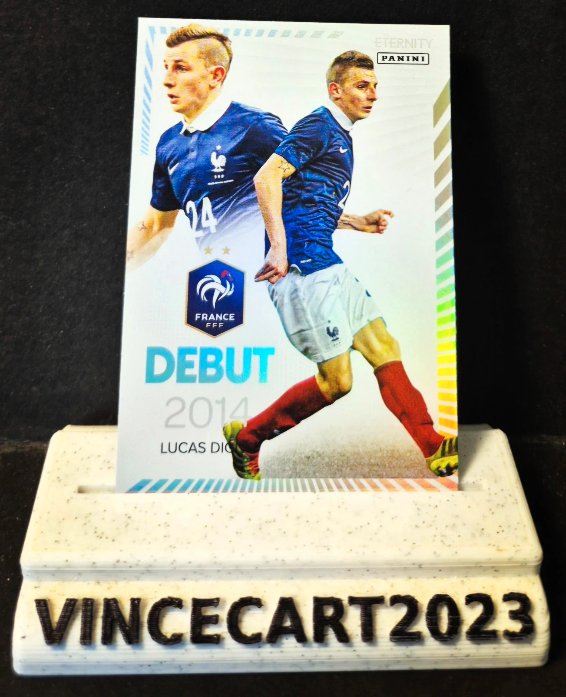

Lucas Digne – Debut 2014 – Équipe de France – Panini Eternity DEB-06
1,00 €
Carte Lucas Digne issue de la collection Panini Eternity, mettant à l’honneur sa première sélection avec l’Équipe de France le 05 mars 2014 lors de la victoire des Bleus face aux Pays-Bas 🇫🇷. 📌 Joueur : Lucas Digne 📌 Équipe : France 📌 Collection : Panini Eternity 📌 Série : Debut 2014 📌 Numéro : DEB-06 📌 État : Near Mint / Excellent état ✨ Carte spéciale retraçant les débuts internationaux de l’expérimenté latéral gauche français. ✨ Design élégant et collection très appréciée des supporters des Bleus. ✨ Idéale pour compléter une collection Équipe de France ou Panini Eternity. 📦 Carte protégée avec soin